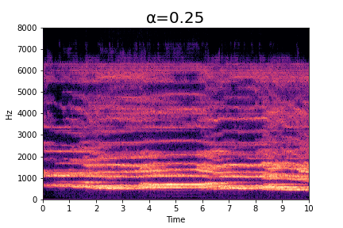

Audio Morphing: Comparing MorphFader, Waveform Mixing, and Trivial Prompting for Linearity or Smoothness while morphing.
On this page, we compare generating morphs using our method to morphs generated using two other baselines - (1) Mixing raw audio waveforms, and (2) trivial prompting.
Each sample below morphs from a source prompt to a target prompt. The source prompt is on the left and the target prompt is on the right.
The audio samples are generated by morphing between the source and target prompts in steps of 0.25.
We find that the sound generated by mixing waveforms or making trivial edits to the text in the prompt do not produce smooth morphs.
Example 1
Source Prompt: A baby sadly crying
Target Prompt: A trumpet happily playing
Observe how morphs generated using our method are smoother and gradually change to the target sound than those generated using waveform mixing or trivial prompting.
Target Prompt: A trumpet happily playing
Observe how morphs generated using our method are smoother and gradually change to the target sound than those generated using waveform mixing or trivial prompting.
Note: Sounds with α=0 and α=1 are generated simply using the source and target prompts indicated by green box.
MorphFader
For generating morphs with prompts we use prompts such as -
"A morph between a baby sadly crying and a trumpet happily playing where the baby sadly crying is represented at a level <X>% and trumpet happily playing is represented at <100-X>%" to generate morphs.
"A morph between a baby sadly crying and a trumpet happily playing where the baby sadly crying is represented at a level <X>% and trumpet happily playing is represented at <100-X>%" to generate morphs.
Prompting

Waveform Mixing
Example 2
Source Prompt: Howling wolf
Target Prompt: Singing choir
Observe how morphs generated using our method are smoother and gradually change to the target sound than those generated using waveform mixing or trivial prompting.
Target Prompt: Singing choir
Observe how morphs generated using our method are smoother and gradually change to the target sound than those generated using waveform mixing or trivial prompting.
Note: Sounds with α=0 and α=1 are generated simply using the source and target prompts indicated by green box.
MorphFader
For generating morphs with prompts we use prompts such as -
"A morph between a baby sadly crying and a trumpet happily playing where the baby sadly crying is represented at a level <X>% and trumpet happily playing is represented at <100-X>%" to generate morphs.
"A morph between a baby sadly crying and a trumpet happily playing where the baby sadly crying is represented at a level <X>% and trumpet happily playing is represented at <100-X>%" to generate morphs.
Prompting

Waveform Mixing